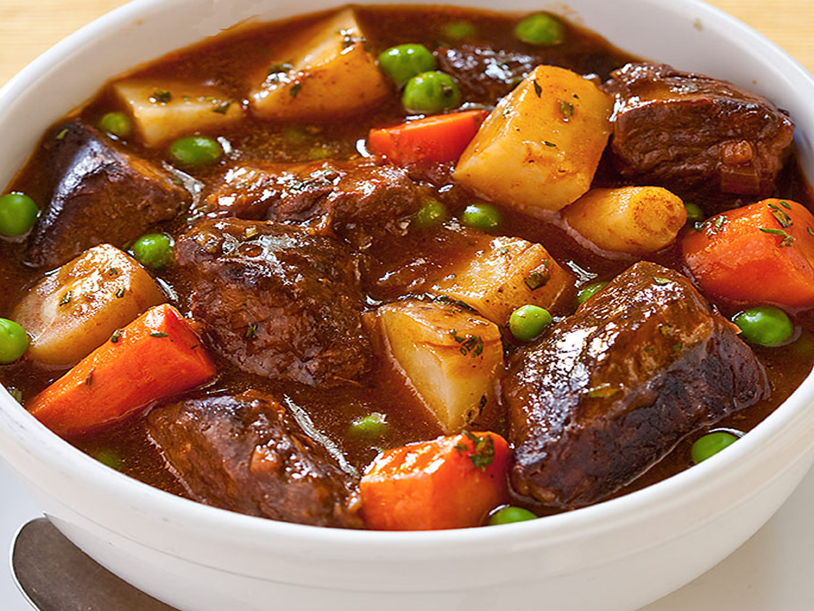

← Back to
home
Skause or Scouse?

Description
A staple in the Viking diet, this rich and flavorful stew is made with slow-cooked meats, root vegetables, and a
mix of earthy spices. This recipe is perfect for a cold winter night or a filling meal after a long day of adventure
Ingridients
- 500g of venison: cubed
- 2 onions: chopped
- 4 cups beef broth
- 3 carrots: chopped
- 2 turnips: chopped
- 2 parsnips: chopped
- 1 tsp salt
- 2 tbsp butter
- 1 tsp dried sage
- 1 tsp dried thyme
- 1 tsp dried rosemary
- 1 tsp ground black pepper
Steps
- Melt the butter in a large pot over medium heat. Add the onions and cook until softened.
- Add the meat and cook until browned on all sides.
- Stir in the carrots, parsnips, turnips, salt, pepper, thyme, sage and rosemary.
- Pour in the beef broth, bring to boil, then reduce the heat and let it simmer for 1-2 hours, or until the meat
is tender and the vegetables are cooked through.
- Serve hot with a side of Viking flatbread or rustic rye bread.